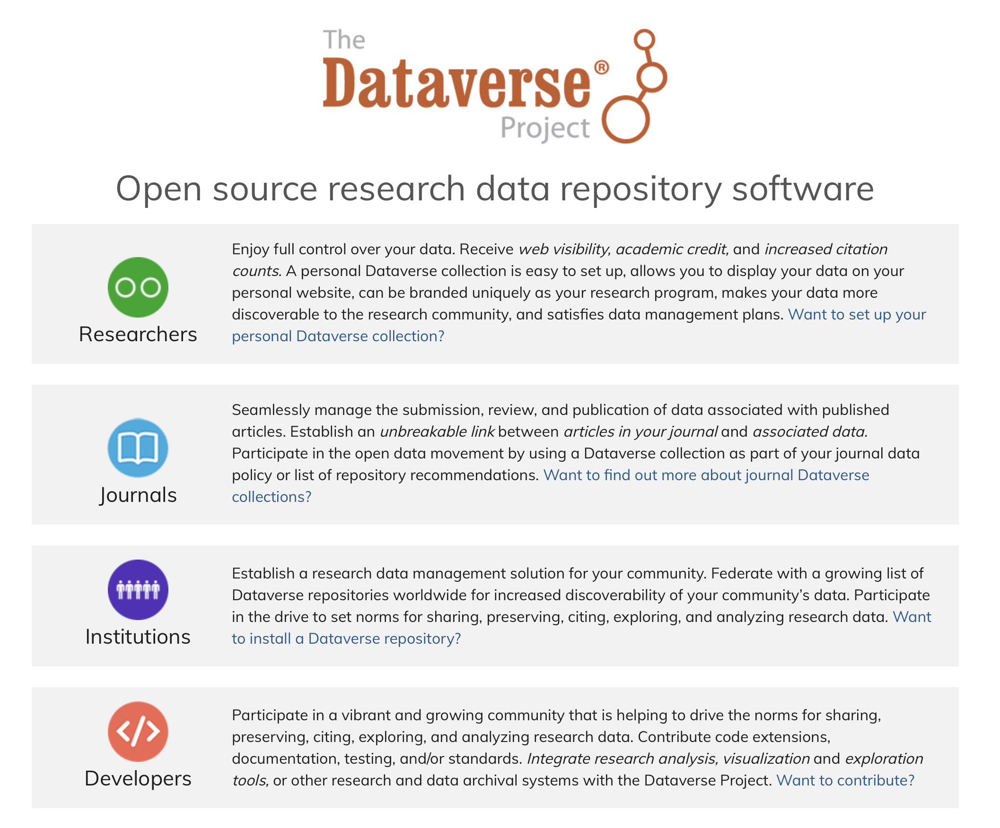
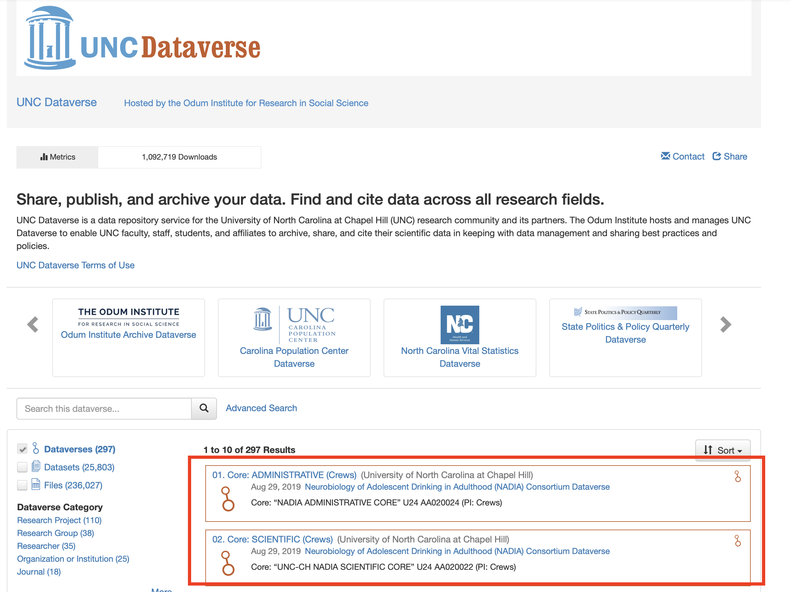
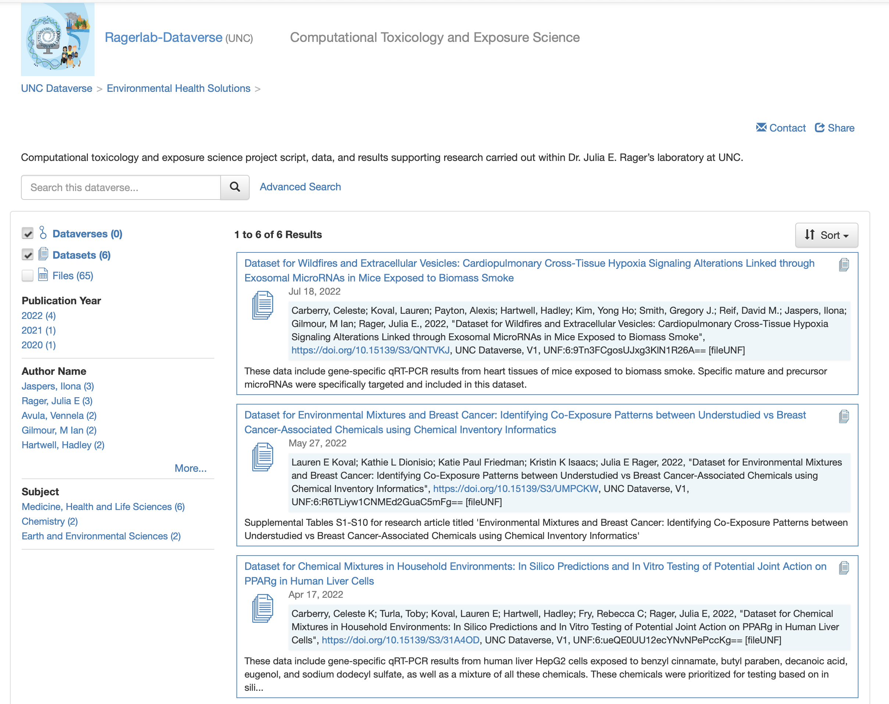
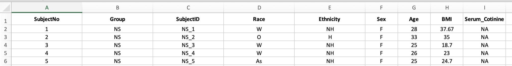
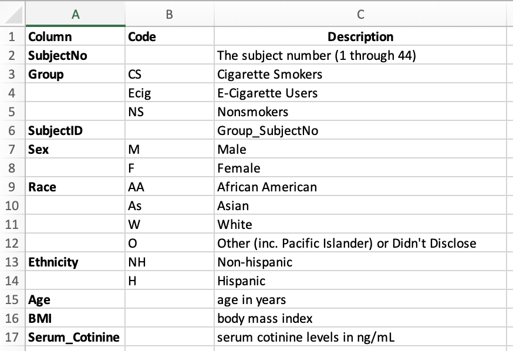
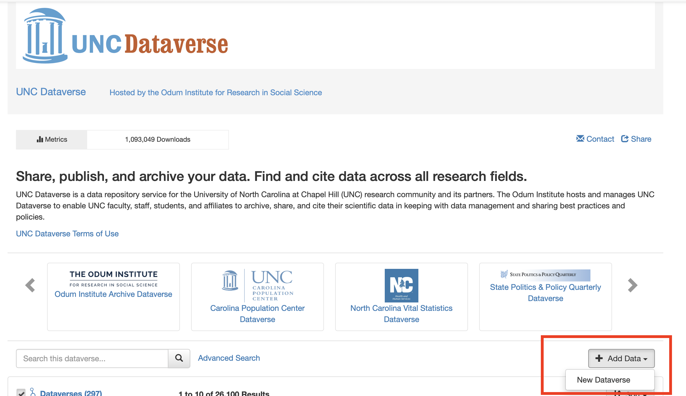
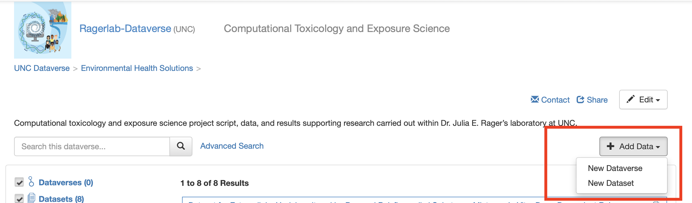

Data Sharing through Online Repositories
An Overview and Example with the Dataverse Repository
This training module was developed by Kyle R. Roell, Alexis Payton, and Julia E. Rager.
All input files (script, data, and figures) can be downloaded from the UNC-SRP TAME2 GitHub website.
Introduction to Training Module
Submitting data to publicly available repositories is an essential part of ensuring data meet FAIR guidelines, as discussed in detail in the previous training module. There are many benefits to sharing and submitting your researching, such as:
- Making more use out of data that are generated in your lab
- More easily sharing and integrating across datasets
- Ensuring reproducibility in analysis findings and conclusions
- Improving the tracking and archiving of data sources, and data updates
- Increasing the awareness and attention surrounding your research as others locate your data through additional online queries
Training Module’s Environmental Health Questions
This training module was specifically developed to answer the following environmental health questions:
- How should I structure my data for upload into online repositories?
- What does the term ‘metadata’ mean and what does it look like?
This module will introduce some of the repositories that are commonly used to deposit data, how to set up metadata files, and how to organize example data in preparation for sharing. We will also provide information surrounding best practices for data organization and sharing through these repositories. Additional resources are also provided throughout, as there are many ways to organize, share, and deposit data depending on your data types and structures and overall research goals.
Data Repositories
There are many publicly available repositories that we should consider when depositing data. Some general repository registries that are helpful to search through include FAIRsharing.org or re3data.org. Journals can also provide helpful resources and starting repository lists, such as Nature and PLOS, which both have published a list of recommended repositories. As detailed in the FAIR training module, there are two main categories of data repositories:
1. Domain Agnostic Data Repositories Domain agnostic repositories allow the deposition of any data type. Some examples include:
- Data in Brief Articles (e.g., Elsevier’s Data in Brief Journal)
- Dryad
- Figshare
- The Dataverse Project
- Zenodo
2. Domain Specific Data Repositories Domain specific repositories allow the deposition of specific types of data, produced from specific types of technologies or within specific domains. Some examples include:
- Database of Genotypes and Phenotypes
- Gene Expression Omnibus
- The Immunology Database and Analysis Portal
- Metabolomics Workbench (National Metabolomics Data Repository)
- Microphysiology Systems Database
- Mouse Genome Informatics
- Mouse Phenome Database
- OpenNeuro
- Protein Data Bank
- ProteomeXchange
- Rat Genome Database
- The Database of Genotypes and Phenotypes
- Zebrafish Model Organism Database
- and many, many, many others…
This training module focuses on providing an example of how to organize and upload data into the Dataverse; though many of the methods described below pertain to other data repositories as well, and also incorporate general data organization and sharing best practices.
The Dataverse Project
Dataverse, organized through The Dataverse Project, is a popular repository option that allows for upload of most types of material, without any stringent requirements. The Dataverse organization also provides ample resources on how to organize, upload, and share data through Dataverse. These resources include very thorough, readable, and user guides and best practices.  Screenshot of the main page of The Dataverse Project
An easier way to think about Dataverse is to interpret it similar to a folder system on your computer. A Dataverse is just an online folder that contains files, data, or datasets that are all related to some topic, project, etc. Although Dataverse was started at Harvard and the base Dataverse lives there, there are many versions of Dataverse that are specific to and supported by various institutions. For example, these training modules are being developed primarily by faculty, staff, and students at the University of North Carolina at Chapel Hill. As such, the examples contained in this module will specifically connect with the UNC Dataverse; though many of the methods outlined here are applicable to other Dataverses and additional online repositories, in general.
What is a Dataverse?
Remember how we pointed out that a Dataverse is similar to a folder system on a computer? Well, here we are going to show you what that actually looks like. But first, something that can be confusing when starting to work with Dataverse is the fact that the term Dataverse is used for both the overarching repository as well as individual subsections (or folders) in which data are stored. For example, the UNC Dataverse is called a Dataverse, but to upload data, you need to upload it to a specific sub-Dataverse. So, what is the difference between the high level UNC Dataverse and smaller, sub-dataverses? Well, nothing, really. The UNC Dataverse is similar to a large folder that says, these are all the projects and research related to or contained within UNC. From there, we want to be more specific about where we store our research, so we are creating more sub-Dataverses (folders) within that higher, overarching UNC Dataverse.
As an example, using the UNC Dataverse, here we can see various sub-Dataverses that have been created as repositories for specific projects or types of data.

As another example looking within a specific Dataverse, here we can see the Dataverse that hosts datasets and publications for Dr. Julia Rager’s lab, the Ragerlab-Dataverse.

Within this Datavere, we can see various datasets produced by her lab. It is worth noting that the datasets may not necessarily be directly related to each other in terms of exact topic, for example, the Ragerlab-Dataverse hosts data pertaining to wildfire smoke exposure as well as chemical exposures and breast cancer. But they are all pertaining to experiments and analyses run within her specific lab.
Let’s now start talking more specifically about how to organize data and format files for Dataverse, create your own “Dataverse”, upload datasets, and what this all means!
Dataset Structure
Before uploading your data to any data repository, it is important to structure your data efficiently and effectively, making it easy for others to navigate, understand, and utilize. While we will cover this in various sections throughout these training modules, here are some basic tips for data structure and organization.
- Keep all data for one participant or subject within one column (or row) of your dataset
- Genomic data and other analytical assays tend to have subjects on columns and genes, expression, etc. as the rows
- Descriptive and demographic data often tend to have subjects or participants as the rows and each descriptor variable (including demographics and any other subject variables) as columns
- Create succinct, descriptive variable names
- For example, do not use something like “This Variable Contains Information Regarding Smoking Status”, and instead just using something like, “Smoking_Status”
- Be aware of using spacing, special characters, and capitalization within variable names
- Think about transforming data from wide to long format depending on your specific dataset and general conventions
- Be sure to follow specific guidelines of repository when appropriate
TAME 2.0 Module 1.1 FAIR Data Management Practices and TAME 2.0 Module 1.4 Data Wrangling in Excel are also helpful resources to reference when thinking about organizing your data.
A general example of an organized, long format dataset in Excel in provided below: 
Only .csv or .txt files can be uploaded to dataverse; therefore, the metadata and data tabs in an excel file will need to saved and uploaded as two separate .csv or .txt files.
Answer to Environmental Health Question 1
With this, we can answer Environmental Health Question 1: How should I structure my data for upload into online repositories?
Answer: It is ideal to have data clearly organized and filled, with succinct and descriptive variable names clearly labeled and values filled in. Most commonly, datasets should be saved as separate .csv or .txt files for upload into data repositories.
Metadata
There are many different definitions of what a metadata file is. Helpful explanations, for example, are provided by the UNC University Libraries:
There are many definitions of metadata, but one of the simplest is data about data. More specifically…
Metadata (in terms of data management) describe a dataset: how they were collected; when they were collected; what assumptions were made in their methodology; their geographic scope; if there are multiple files, how they relate to one another; the definitions of individual variables and, if applicable, what possible answers were (i.e., to survey questions); the calibration of any equipment used in data collection; the version of software used for analysis; etc. Very often, a dataset that has no metadata is incomprehensible.
Metadata ARE data. They are pieces of information that have some meaning in relation to another piece of information. They can be created, managed, stored, and preserved like any other data.
Metadata can be applied to anything. A computer file can be described in the same way that a book or piece of art can be described. For example, both can have a title, an author, and a year created. Metadata should be documented for research outputs of any kind.
Metadata generally has little value on their own. Metadata adds value to other information, but are usually not valuable in themselves. There are exceptions to this rule, such as text transcription of an audio file.
There are three kinds of metadata:
Descriptive metadata consist of information about the content and context of your data.
- Examples: title, creator, subject keywords, and description (abstract)
Structural metadata describe the physical structure of compound data.
- Examples: camera used, aperture, exposure, file format, and relation to other data or files
Administrative metadata are information used to manage your data.
- Examples: when and how they were created, who can access them, software required to use them, and copyright permissions
Therefore, after having organized your primary dataset for submission into online repositories, it is equally important to have a metadata file for easy comprehension and utilization of your data for future researchers or anyone downloading your data. While most repositories capture some metadata on the dataset page (e.g., descripton of data, upload date, contact information), there is generally little information about the specific data values and variables. In this section, we review some general guidelines and tips to better annotate your data.
First, keep in mind, depending on the specific repository you are using, you may have to follow their metadata standards. But, if uploading to more generalist repository, this may be up to you to define.
Generally, a metadata file consists of a set of descriptors for each variable in the data. If you are uploading data that contains many covariates or descriptive variables, it is essential that you provide a metadata file that describes these covariates. Both a description of the variable as well as any specific levels of any categorical or factor type variables.
From the dataset presented previously, here we present an example of an associated metadata file: 
Answer to Environmental Health Question 2
With this, we can answer Environmental Health Question 2: What does the term ‘metadata’ mean and what does it look like?
Answer: Metadata refers to the information that describes and explains data. It looks like an additional dataset that provides context with details such as the source, type, owner, and relationships to other datasets. This file can help users understand the relevance of a specific dataset and provide guidance on how to use it.
Creating a Dataverse
Now, let’s review how to actually create a Dataverse. First, navigate to the parent Dataverse that you would like to use as your primary host website. For example, our group uses the UNC Dataverse. If you do not already have one, create a username and login.
Then, from the home Dataverse page, click “Add Data” and select “New Dataverse”. 
And fill in the information necessary.
And that is it. After creating your Dataverse site, you will need to publish it; however, before it is accessible to the public, note that you can actually create a Dataverse within another Dataverse (similar to a folder within a folder on your computer). This makes sense even when you are creating a new Dataverse at the home, UNC Dataverse level, you are still technically creating a new Dataverse within an existing one (the large UNC Dataverse).
Here are some tips as you create your Dataverse:
- Do not recreate a Dataverse that already exists
- Choose a name that is specific, but general enough that it doesn’t only pertain to one specific dataset
- You can add more than one contact email, if necessary
Creating a Dataset
Creating a dataset creates a page for your data containing information about that data, a citation for the data (something valuable and somewhat unique to Dataverse), as well the place from where you data can be directly accessed or downloaded. First, decide the specific Dataverse your data will live and navigate to that specific Dataverse site. Then carry out the following steps to create a dataset:
- Navigate to the Dataverse page under which your dataset will live
- Click “Add Data” and then select “New Dataset”

- Fill in the necessary information
- Upload your data and metadata file(s) structured as detailed above
Now, you have a dataset within your Dataverse. Again, you will have to publish the dataset for someone to have access to it. The easy part of using a more generalist repository like Dataverse, is that you do not have to have a strict data structure adherence. However, this means it is up to you to make sure your data is readable and useable.
Concluding Remarks
In this training module, we set out to express the importance of uploading data to online repositories, demonstrate what the upload process may look like using a generalist repository (Dataverse), and give some examples and tips on structuring data for upload and creating metadata files. It is important to choose the appropriate repository for your data based on your field of study and specifications of your work.
Try creating your own Dataverse repository, format your files to be uploaded to Dataverse, and upload those files to your new repository!